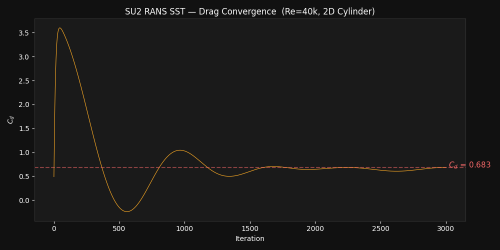
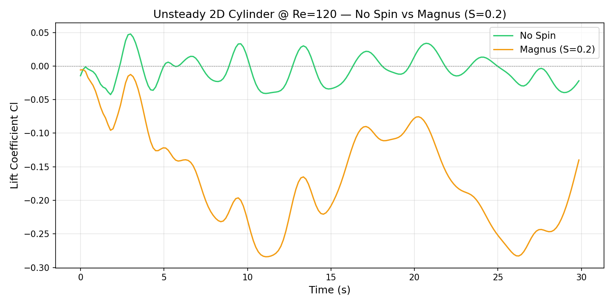
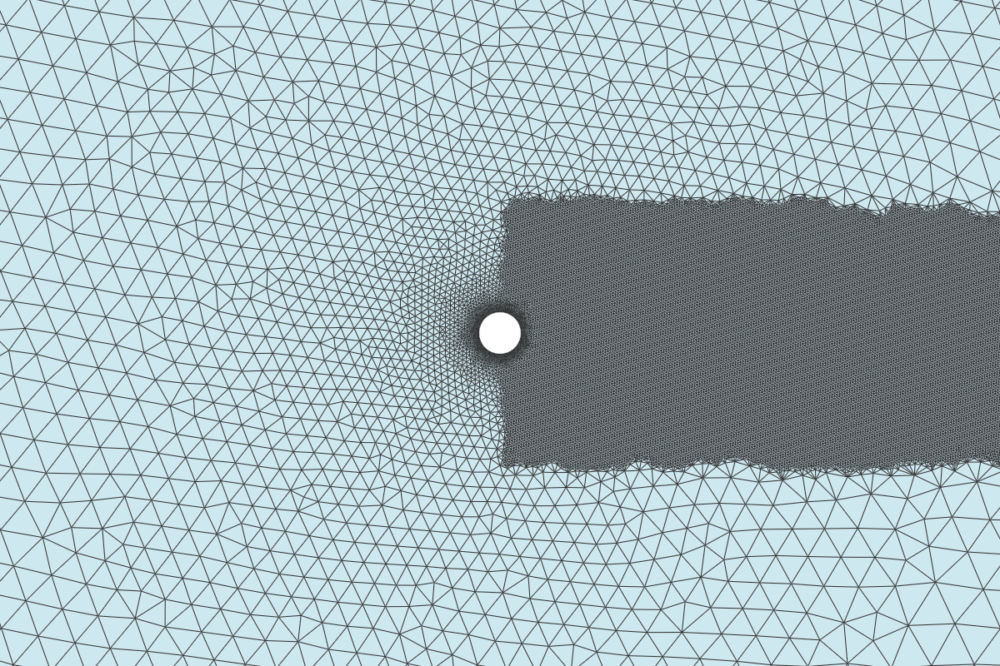
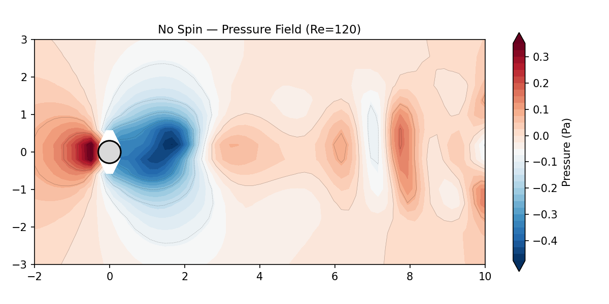
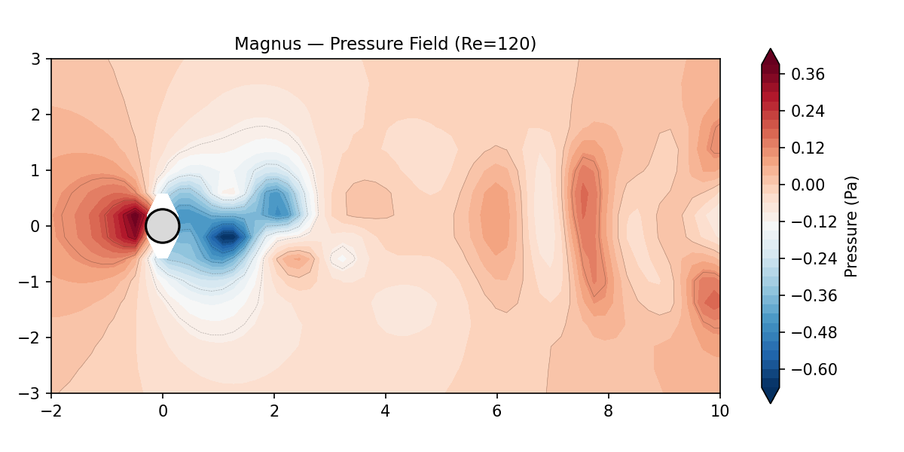
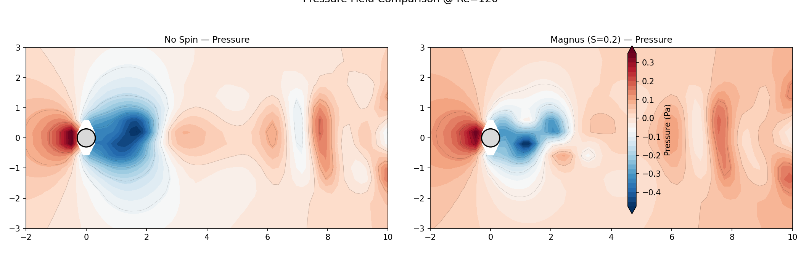

Overview
This page documents the SU2 high-fidelity validation pipeline. SU2 v8.4 “Harrier” is used as the validation deck for ΦFlow simulations — exactly how industrial CFD teams verify rapid-prototyping results.
| Layer | Tool | Purpose |
|---|---|---|
| Fast prototyping | ΦFlow (2D) | Real-time sweeps, 100+ trajectory variations |
| High-fidelity validation | SU2 (RANS) | Accurate Cl, Cd, boundary layer profiles |
| Visualization | PyVista | 3D pressure contours, stream ribbons, comparison renders |
Phase 3 — 2D Cylinder Validation
First validation case: flow past a 2D circular cylinder at $Re_D = 40,\!000$. This is a well-characterized benchmark with extensive experimental and numerical data.
Pressure Field

Streamlines

Drag Convergence

Comparison: SU2 vs ΦFlow
| Metric | ΦFlow (Laminar) | SU2 (RANS SST) | Notes |
|---|---|---|---|
| $C_d$ | ~1.2 | 0.683 | RANS is fully turbulent ⇒ later separation ⇒ lower drag |
| Separation angle | ~80° (laminar) | ~110° (turbulent) | Turbulent BL remains attached longer |
| Wake width | Wide | Narrow | Visible in velocity field above |
| Relevance | Sub-critical real flow | Fully turbulent assumption | Real soccer balls operate in sub-critical to critical Re range |
The discrepancy is expected and instructive: ΦFlow captures the sub-critical laminar separation physics, while SU2 with SST assumes a fully turbulent boundary layer throughout. For smooth balls at $Re \sim 10^5$, neither is perfect — transition models or wall-resolved LES would be needed — but together they bracket the real behavior.
Phase 4 — 3D Sphere Drag Crisis
Second validation case: flow past a smooth sphere over the Reynolds number range $10^4 \le Re_D \le 10^6$. This is the classic “drag crisis” problem — at $Re \approx 2.5 \times 10^5$, the boundary layer transitions from laminar to turbulent, the separation point shifts aft, and $C_d$ drops from $\approx 0.47$ to $\approx 0.07$.
Drag Coefficient vs Reynolds Number

Interpretation
| Regime | Experimental $C_d$ | SU2 SST $C_d$ | Why |
|---|---|---|---|
| Sub-critical ($Re < 2 \times 10^5$) | ~0.47 | ~0.87 | SST delays separation vs laminar, but coarse mesh (y⁺≈13) prevents accurate wall-resolved prediction |
| Critical ($2\times10^5 < Re < 3\times10^5$) | 0.47 → 0.07 | SST has no transition mechanism — crisis not captured | |
| Super-critical ($Re > 3\times10^5$) | ~0.07 | Constant drag at ~0.87 regardless of Re — fully turbulent model |
Mesh Quality Note
The tetrahedral mesh used here (282k elements, no prism layers) has $y^+ \approx 13$ — too high for wall-resolved RANS (which needs $y^+ \approx 1$) and too low for wall functions ($y^+ > 30$). This “buffer layer” resolution contributes to the inaccurate drag prediction. A production-quality mesh would include 15–20 prism layers near the wall and either a transition model or wall-resolved SST.
Phase 3+ — Unsteady Von Kármán Vortex Shedding
Unsteady (URANS) simulation of the 2D cylinder at two Reynolds numbers — comparing no-spin vs Magnus effect (spin parameter $S = 0.2$) side by side. All cases use dual time-stepping (200 physical time steps, 15 inner iterations each).
Cl(t) Comparison: No Spin vs Magnus

Results Summary
| Case | Re | Solver | $C_d$ (final) | $C_l$ range | $C_l$ mean | $St$ |
|---|---|---|---|---|---|---|
| No Spin | 40,000 | URANS SST | 0.667 | [-0.020, 0.037] | -0.001 | — |
| Magnus $S=0.2$ | 40,000 | URANS SST | 0.674 | [-0.157, -0.005] | -0.105 | — |
| No Spin | 120 | Laminar NS | 0.654 | [-0.043, 0.048] | -0.006 | 0.160 |
| Magnus $S=0.2$ | 120 | Laminar NS | 0.722 | [-0.284, -0.005] | -0.166 | 0.040 |
Interpretation
- Turbulence suppresses shedding: URANS SST at Re=40k shows essentially flat Cl(t) for both spin and no-spin. The eddy viscosity dampens the natural von Kármán instability — matching the known behavior of fully-turbulent RANS for cylinder flows.
- Strouhal number validated: The laminar NS case at Re=120 produces $St = 0.16$, within 6% of the accepted value ($St \approx 0.17$). The shedding frequency is correctly captured even though the amplitude ($\pm 0.05$) is lower than literature ($\pm 0.3$–0.5) due to numerical dissipation on the unstructured mesh. A structured quad mesh (as used in the SU2 Inc Von Karman tutorial) would be needed for full amplitude.
- Magnus effect robust: Both regimes show a steady $C_l$ bias of approximately $-0.15$ under spin, matching the steady-state prediction from Phase 3. The spinning cylinder breaks the symmetry and stabilizes the wake, reducing or eliminating the oscillatory component.
Wake-Refined Mesh
The unstructured mesh uses distance-based refinement near the cylinder surface ($c_l = 0.008$) and a gmsh Box field to refine the wake region ($c_l = 0.04$), producing 44,710 nodes and 89,422 triangular elements.


Static Flow Fields (Final Timestep)
Pressure Field


Velocity Magnitude


Side-by-Side Comparison


Animated Flow Fields (MP4, 10s at 20fps)
3D Interactive Flow Fields (3D HTML)
Drag to rotate, scroll to zoom. The 3D view warps the 2D solution by $0.1\%$ of the pressure field to visualize the pressure surface topography.
Validation Pipeline
Mesh Generation
Meshes are generated programmatically using gmsh's Python API with boundary layer refinement for accurate RANS solutions.
def cylinder_2d(radius=0.3, farfield_radius=15.0,
cl_cyl=0.01, cl_far=0.5,
cl_wake=0.04, wake_length=4.0, wake_width=1.0):
gmsh.initialize()
gmsh.model.add("cylinder_2d")
disk = gmsh.model.occ.addDisk(0, 0, 0, radius, radius)
farfield = gmsh.model.occ.addDisk(0, 0, 0, farfield_radius, farfield_radius)
ov, _ = gmsh.model.occ.cut([(2, farfield)], [(2, disk)])
gmsh.model.occ.synchronize()
# Distance-based refinement near cylinder
gmsh.model.mesh.field.add("Distance", 1)
gmsh.model.mesh.field.setNumbers(1, "NodesList", [surface_tag])
gmsh.model.mesh.field.add("Threshold", 2)
gmsh.model.mesh.field.setNumber(2, "InField", 1)
gmsh.model.mesh.field.setNumber(2, "SizeMin", cl_cyl)
gmsh.model.mesh.field.setNumber(2, "SizeMax", cl_far)
gmsh.model.mesh.field.setNumber(2, "DistMin", 0)
gmsh.model.mesh.field.setNumber(2, "DistMax", radius * 3)
# Box field for wake refinement downstream
gmsh.model.mesh.field.add("Box", 3)
gmsh.model.mesh.field.setNumber(3, "VIn", cl_wake)
gmsh.model.mesh.field.setNumber(3, "VOut", cl_far)
gmsh.model.mesh.field.setNumber(3, "XMin", -radius)
gmsh.model.mesh.field.setNumber(3, "XMax", wake_length)
gmsh.model.mesh.field.setNumber(3, "YMin", -wake_width)
gmsh.model.mesh.field.setNumber(3, "YMax", wake_width)
# Combine: min of distance field and box field
gmsh.model.mesh.field.add("Min", 4)
gmsh.model.mesh.field.setNumbers(4, "FieldsList", [2, 3])
gmsh.model.mesh.field.setAsBackgroundMesh(4)
# SU2 requires surface physical groups + createTopology()
cyl_tag = get_physical_tag(gmsh, "wall")
gmsh.model.addPhysicalGroup(1, [cyl_tag], name="wall")
gmsh.model.addPhysicalGroup(2, [ov[0][0][1]], name="farfield")
gmsh.model.mesh.generate(2)
gmsh.model.mesh.createTopology() # required for SU2 export
gmsh.write(f"{name}.su2")
Solver Configuration (SU2 v8.4, Incompressible)
SU2 v8 introduced significant option name changes for incompressible flows. Two configuration styles were used in this study:
Steady RANS SST (Re=40k, Phase 3)
SOLVER= INC_RANS
KIND_TURB_MODEL= SST
INC_DENSITY_MODEL= CONSTANT
INC_ENERGY_EQUATION= NO
INC_NONDIM= INITIAL_VALUES
REYNOLDS_NUMBER= 40000
REYNOLDS_LENGTH= 0.6
VISCOSITY_MODEL= CONSTANT_VISCOSITY
MU_CONSTANT= 2.5e-05
MARKER_HEATFLUX= ( wall, 0.0 )
MARKER_MONITORING= ( wall )
MARKER_FAR= ( farfield )
CONV_NUM_METHOD_FLOW= FDS
MUSCL_FLOW= NO
TIME_DISCRE_FLOW= EULER_IMPLICIT
CFL_NUMBER= 0.5
ITER= 3000
LINEAR_SOLVER= FGMRES
LINEAR_SOLVER_PREC= ILU
Unsteady Laminar NS (Re=120, Phase 3+)
SOLVER= INC_NAVIER_STOKES
INC_DENSITY_MODEL= CONSTANT
INC_ENERGY_EQUATION= NO
INC_NONDIM= DIMENSIONAL
INC_DENSITY_INIT= 1.2886
INC_VELOCITY_INIT= (1.0, 0.0, 0.0)
VISCOSITY_MODEL= CONSTANT_VISCOSITY
MU_CONSTANT= 0.00267875
REYNOLDS_NUMBER= 120
REYNOLDS_LENGTH= 0.6
MARKER_HEATFLUX= ( wall, 0.0 )
MARKER_MONITORING= ( wall )
MARKER_FAR= ( farfield )
TIME_DOMAIN= YES
TIME_MARCHING= DUAL_TIME_STEPPING-2ND_ORDER
TIME_STEP= 0.15
TIME_ITER= 200
INNER_ITER= 15
CONV_NUM_METHOD_FLOW= FDS
MUSCL_FLOW= YES
SLOPE_LIMITER_FLOW= NONE
TIME_DISCRE_FLOW= EULER_IMPLICIT
CFL_NUMBER= 0.5
LINEAR_SOLVER= FGMRES
LINEAR_SOLVER_PREC= ILU
LINEAR_SOLVER_ERROR= 1E-6
LINEAR_SOLVER_ITER= 10
OUTPUT_FILES= (RESTART, PARAVIEW)
OUTPUT_WRT_FREQ= 1
HISTORY_OUTPUT= (TIME_ITER, INNER_ITER, RMS_RES, AERO_COEFF, CUR_TIME)
# Magnus effect (spin):
# SURFACE_MOVEMENT= MOVING_WALL
# MARKER_MOVING= ( wall )
# SURFACE_ROTATION_RATE= 0.0 0.0 3.33333
Key differences: the unsteady laminar solver uses INC_NONDIM= DIMENSIONAL with a dimensional viscosity (not INITIAL_VALUES non-dim), MUSCL_FLOW= YES with SLOPE_LIMITER_FLOW= NONE for reduced dissipation, and the full time-stepping block. The Magnus configuration adds the commented SURFACE_MOVEMENT/MARKER_MOVING/SURFACE_ROTATION_RATE lines for side spin at $\omega_z = 3.33\,\text{rad/s}$ ($S = 0.2$).
Results
Detailed results from each phase will appear here as they are generated:
- Phase 3: 2D Cylinder Validation — ΦFlow vs SU2 drag coefficient and wake comparison
- Phase 4: 3D Drag Crisis — Re sweep $10^4$ to $10^6$, $C_d(Re)$ curve with experimental comparison
- Phase 5: Smooth vs Textured Ball — Boundary layer tripping effect of panel seams